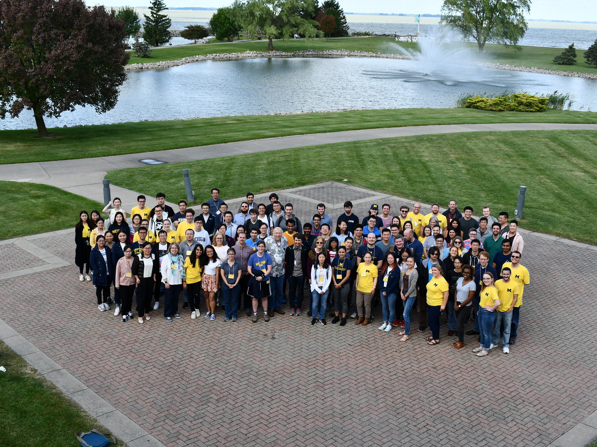
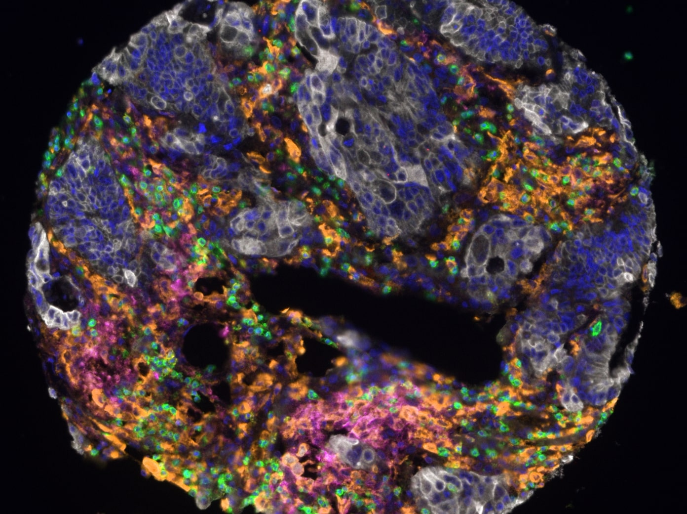

DCMB Retreat
I had such a blast at my department's annual retreat! This year, we visited Maumee State Park in Oregon, Ohio. I had a great time catching up with old friends, meeting some of the new students, and learning about my colleague's exciting research.

Predicting patient outcome in colorectal cancer
In my first ever co-authored scientific paper, we use mathematics to quantify the infiltration of cytotoxic T-cells into cancerous cells, and show that this is a predictor of patient outcome. Check it out here!

Fun with the labmates
To celebrate the end of a great semester, some of my labmates and I enjoyed a few good rounds of laser tag! Note: I am not very good at laser tag.